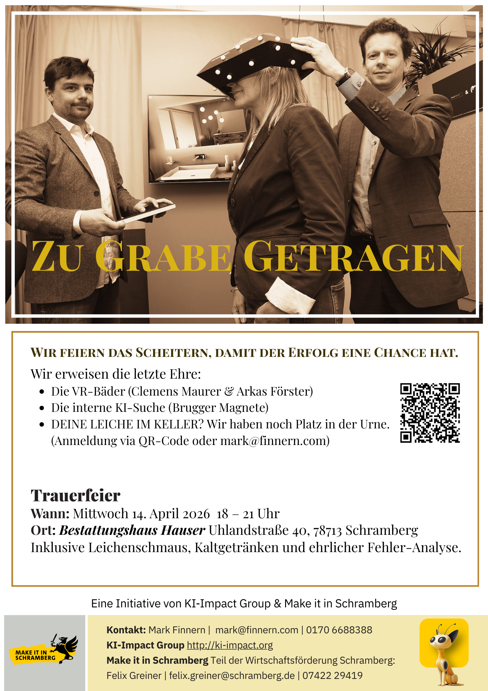
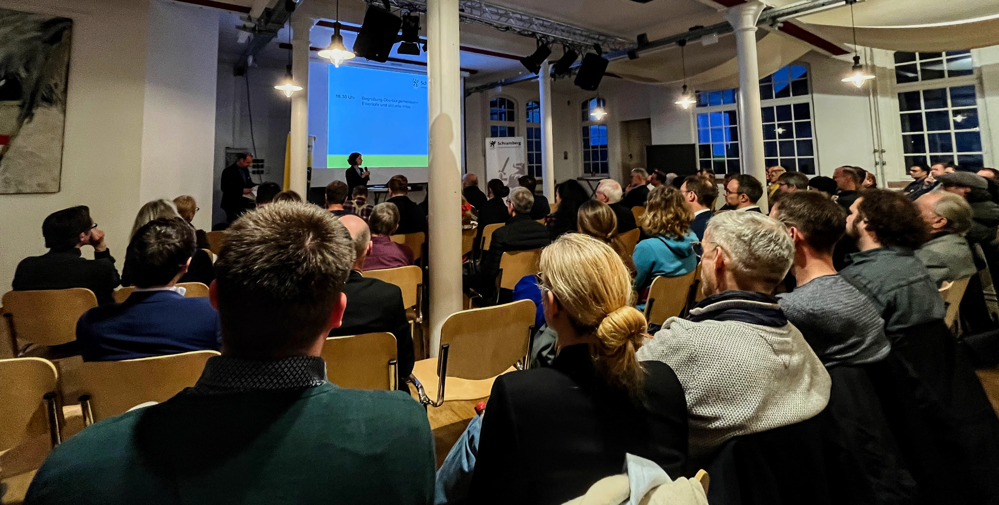
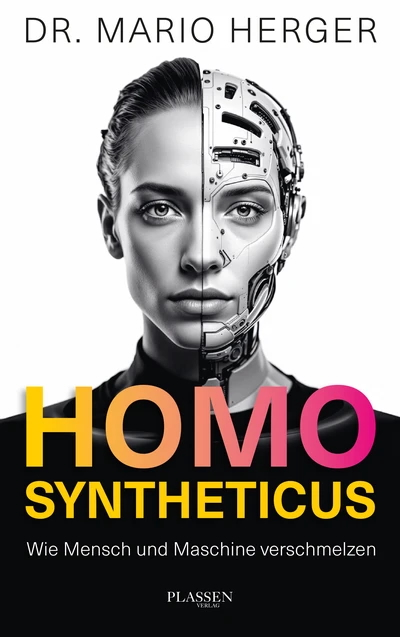

Innovative Events im Raum Schwarzwald – von Schramberg bis ganz Baden-Württemberg
Gegründet von Mark Finnern nach Jahren im Silicon Valley – zurück im Schwarzwald, um den Innovationsgeist der Region neu zu entfachen. Mach mit! →

Jede tote Idee ist Dünger für den nächsten Erfolg! Wir sezieren gemeinsam gescheiterte Visionen (u.a. VR-Bäder & KI-Suche) und schauen mit KI-Rückenwind nach vorn. Inklusive Leichenschmaus & ehrlichem Austausch.
Platz reservieren Kalender-Eintrag KI-Impact Gruppe
Das Networking-Event für Unternehmer und Entscheider aus der Region. Austausch, Impulse und Vernetzung in lockerer Atmosphäre.
Per E-Mail anmelden KI-Impact GruppeIPAI Foundation & Hi!Paris. Thema: Bildung der Zukunft. Freie Teilnahme für Studierende und KI-Enthusiasten.
Zur Anmeldung →Impulsvorträge zu Mikrotechnik, smarten Sensorsystemen, Embedded Systems & KI. Lab-Touren & Demos. Kostenlos.
Anmelden (kostenlos) →Workshop für Gründer und Start-ups. Frühstück inklusive. 25 €.
Anmelden →Networking-Event für Unternehmer und Entscheider aus der Region.
Per E-Mail anmelden →KI in regulierten Umfeldern, PromptOps, lokale LLMs. Networking & Food. Kostenlos.
Anmelden →Tote Ideen als Dünger für den nächsten Erfolg – mit KI-Rückenwind. Inklusive Leichenschmaus.
Platz reservieren →1.000+ Teilnehmer, 100+ Speaker. Generative AI, Industrie-KI, Cyber Security. AWS, Bosch, Meta. Ab €49.
Tickets ab €49 →Einblicke in innovative Unternehmenspraxis – hosted by Stiftung St. Franziskus.
Per E-Mail anmelden →Diskussion über wirtschaftliche und politische Entwicklungen in China und ihre Auswirkungen auf die Region.
Per E-Mail anmelden →Führende Industrie-Experten diskutieren den Einsatz von KI und Machine Learning in der Produktion.
Details →Der KI-Anwender-Event für Entscheider aus Automation, Automotive, Maschinenbau, Elektronik und Medizintechnik.
Zum Summit →KI-Workflows für den Mittelstand – Grundlagenkurs mit Fördermöglichkeit.
Zum Kurs →C-Level aus Bau, Industrie und Engineering. Innovation auf Deutschlands höchster Besucherplattform.
Details →Das Innovations-Highlight im Südwesten. Mit StartupBW Elevator Pitch Landesfinale.
Festival →Europas KI-Treffpunkt. Live-Demos, Workshops, Keynotes. Kostenlos. 2025: 13.500 Besucher.
KI Festival →Insights aus San Francisco: Humanoide Roboter und die Zukunft der Arbeit.

TechnologyMountains e.V. & IHK Schwarzwald-Baar-Heuberg. ~200 Teilnehmer, KI, IoT, Sensorik, AR/VR.
TechnologyMountains →Generative KI, Agentische KI, KI in der Produktion. KI.Summit 2026 in Planung.
IAO Veranstaltungen →Nit schwätza - macha! :-)